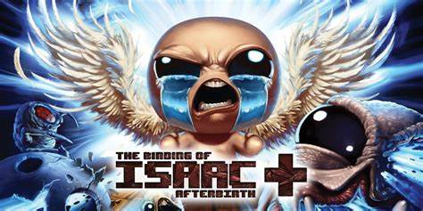

Afterbirth / Afterbirth+
The Afterbirth and Afterbirth+ expansions added additional content to the base Rebirth game, such as:
- Over 150 new items
- 2 new characters
- Many new enemies, mini-bosses, and champion variants
- 20+ additional bosses
- New game modes: Greed and Greedier
Item: Jacob's Ladder

Jacob's Ladder is a unique item that creates a chain lightning effect, which can look very nice and be very useful when enemies are stacked up on each other.
It works in a small area around the detonation of your tears, or if you have piercing and/or spectral tears, it can proc multiple times before your tear disappears.
Though this item is not game-breaking, it is such a powerful item that brings a smile to your face every time you find it and can result in why you win the game.
Game-Breaking Item: Chaos
A very notable item for game-breaking added in Afterbirth was the item Chaos.
This item changes all item pools in the game to contain EVERY ITEM. This means you can find item room items in the shop or a boss item in your angel room.
Game-Breaking Item: Restock
A new introduction from the Afterbirth DLC packs was the Restock machine and item.
These allow for infinite shops, meaning when you pick an item up, it restocks at a higher price.
This can be used to access most, if not all, items in the item shop, or every item in the game with the Chaos item.